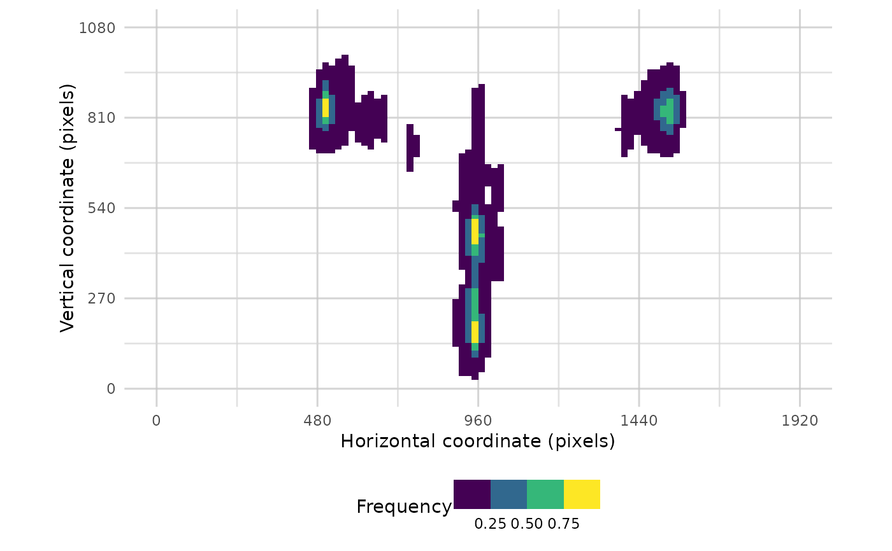
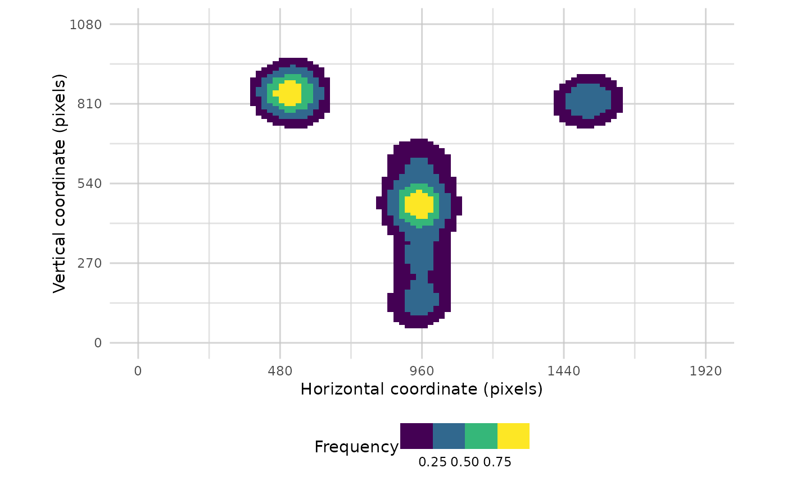

Plots a heatmap of raw data.
Arguments
- data
data in standard raw data form (time, x, y, trial)
- pID_values
specify particular values within 'pID' to plot data from certain participants
- trial_values
specify particular values within 'trial' to plot data from certain trials
- bg_image
The filepath of a PNG image to be added to the plot, for example to show a screenshot of the task.
- res
resolution of the display to be shown, as a vector (xmin, xmax, ymin, ymax)
- flip_y
reverse the y axis coordinates (useful if origin is top of the screen)
- plot_type
Specify the nature of the data displayed. Either "density" (default) or "hex"
- alpha_range
a pair of values between 0 and 1. The first is a cut off, whereby lower values are not displayed. The second value sets the transparancy of the visible poitns.
- plot_header
display the header title text which explains graphical features of the plot.
Examples
# \donttest{
data <- combine_eyes(HCL)
# plot all trials data
plot_heatmap(data, pID_values = 118, alpha_range = c(0.3,0.8))
#> Warning: Removed 320 rows containing non-finite outside the scale range
#> (`stat_density2d()`).
#> Warning: Removed 396 rows containing missing values or values outside the scale range
#> (`geom_tile()`).

#plot one trial
plot_heatmap(data, trial_values = 1)
#> Warning: Removed 160 rows containing non-finite outside the scale range
#> (`stat_density2d()`).
#> Warning: Removed 396 rows containing missing values or values outside the scale range
#> (`geom_tile()`).

# }